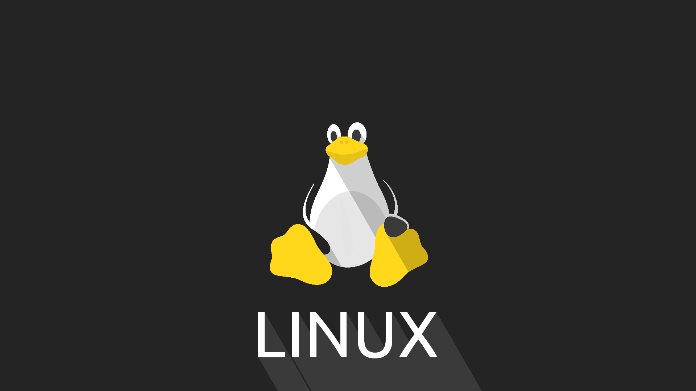

Do Hobby de um Estudante à Revolução do Código Aberto: A História do Linux
O Linux é um sistema operacional de código aberto que desempenha um papel fundamental no mundo da tecnologia. Sua história é uma jornada marcada pela colaboração e pela paixão pela liberdade do software.
O Início
Tudo começou em 1991, quando um jovem estudante finlandês chamado Linus Torvalds começou a trabalhar em um novo sistema operacional como um hobby. Ele estava insatisfeito com as opções disponíveis na época e decidiu criar algo melhor. Linus começou a desenvolver o núcleo (kernel) do sistema e o chamou de "Linux".
A Revolução Open Source
O que tornou o Linux especial foi o seu modelo de desenvolvimento de código aberto. Linus Torvalds e outros programadores de todo o mundo trabalharam juntos para melhorar o sistema. Eles compartilharam seu código livremente, permitindo que qualquer pessoa o usasse, estudasse, modificasse e redistribuísse.
Crescimento da Comunidade
O Linux rapidamente atraiu a atenção de entusiastas de computadores e empresas. Uma comunidade global se formou, contribuindo com código, correções de bugs e recursos. Empresas como a IBM, a Red Hat e a Google também adotaram o Linux em seus produtos e serviços.
Diversidade de Distribuições
Uma característica única do Linux é a variedade de distribuições (distros) disponíveis. Cada distro é uma versão personalizada do sistema operacional que atende a necessidades específicas. Algumas das distros mais populares incluem o Ubuntu, o Fedora e o Debian.
Sucesso e Ubiquidade
Hoje, o Linux é onipresente. Você o encontra em smartphones (Android), servidores, sistemas embarcados, supercomputadores e até mesmo em dispositivos domésticos. Ele é conhecido por sua estabilidade, segurança e flexibilidade.
Filosofia do Software Livre
O sucesso do Linux também promoveu a filosofia do software livre. Isso impulsionou o movimento de código aberto, no qual o código-fonte é disponibilizado gratuitamente para que todos possam usar e melhorar.
Conclusão
A história do Linux é um testemunho do poder da colaboração e da paixão pela liberdade do software. Ele se tornou um pilar fundamental da computação moderna e continuará a desempenhar um papel importante no futuro.
O Linux é um sistema operacional de código aberto, o que significa
que seu código-fonte é acessível a todos para visualização,
modificação e distribuição. Ele foi criado por Linus Torvalds em 1991 e
é construído em torno de um kernel altamente flexível.
Uma distribuição Linux, ou "distro", é uma versão personalizada do
sistema operacional Linux que inclui o kernel do Linux, bem como um
conjunto específico de programas, bibliotecas e ferramentas.
Algumas distribuições populares incluem o Ubuntu, Fedora e Debian.
A resposta a essa pergunta depende das necessidades e preferências individuais.
O Linux é conhecido por sua estabilidade, segurança e personalização. É uma ótima escolha para desenvolvedores,
administradores de sistema e entusiastas da tecnologia. No entanto, a escolha entre o Linux e o Windows
deve ser baseada em seus objetivos e requisitos específicos.
A instalação do Linux é um processo relativamente simples.
Você pode criar uma mídia de instalação, como um pendrive bootável,
e seguir as instruções da distribuição de sua escolha.
Sim, muitas distribuições Linux oferecem a opção de "executar a partir do pendrive"
ou "testar antes de instalar". Isso permite que você experimente o sistema
sem fazer alterações no seu computador.
Não é necessário apagar o Windows para instalar o Linux.
Você pode optar por uma instalação dual-boot, que permite escolher
entre os dois sistemas na inicialização.
A curva de aprendizado do Linux pode variar, mas muitos usuários acham a transição relativamente tranquila,
especialmente com as distribuições amigáveis para iniciantes.
Existem muitos recursos disponíveis para aprender a usar o Linux.
Embora o Linux seja mais seguro em relação a vírus em comparação com o Windows,
não é imune a ameaças. No entanto, com boas práticas de segurança e atualizações regulares,
os riscos podem ser minimizados.
Não, os programas do Windows não são nativamente compatíveis com o Linux.
No entanto, muitos programas populares têm equivalentes para Linux e, em alguns casos,
é possível executar aplicativos do Windows no Linux usando emuladores ou virtualização.
O Linux possui sistemas de gerenciamento de pacotes que facilitam a instalação e atualização de programas.
Basta usar comandos como "apt", "yum" ou "pacman", dependendo da distribuição.
Existem muitas alternativas de software para Windows no Linux.
Você pode pesquisar comunidades e fóruns de usuários do
Linux para obter recomendações específicas para substituições de programas.
KDE e Gnome são ambientes de desktop populares para o Linux.
A escolha entre eles é uma questão de preferência pessoal, já que ambos
oferecem experiências de usuário sólidas e recursos poderosos.
O Linux suporta muitos jogos, especialmente com o crescimento do Steam para Linux.
No entanto, a compatibilidade varia, e alguns jogos podem exigir esforço adicional para funcionar.
No Linux, "root" é o superusuário com privilégios administrativos completos.
O acesso root deve ser usado com cuidado, pois pode afetar o sistema de maneira crítica.
Repositórios são servidores que armazenam pacotes de software.
Eles são usados pelos sistemas de gerenciamento de pacotes do Linux para baixar e atualizar programas.
Os repositórios são essenciais para manter seu sistema atualizado e seguro.